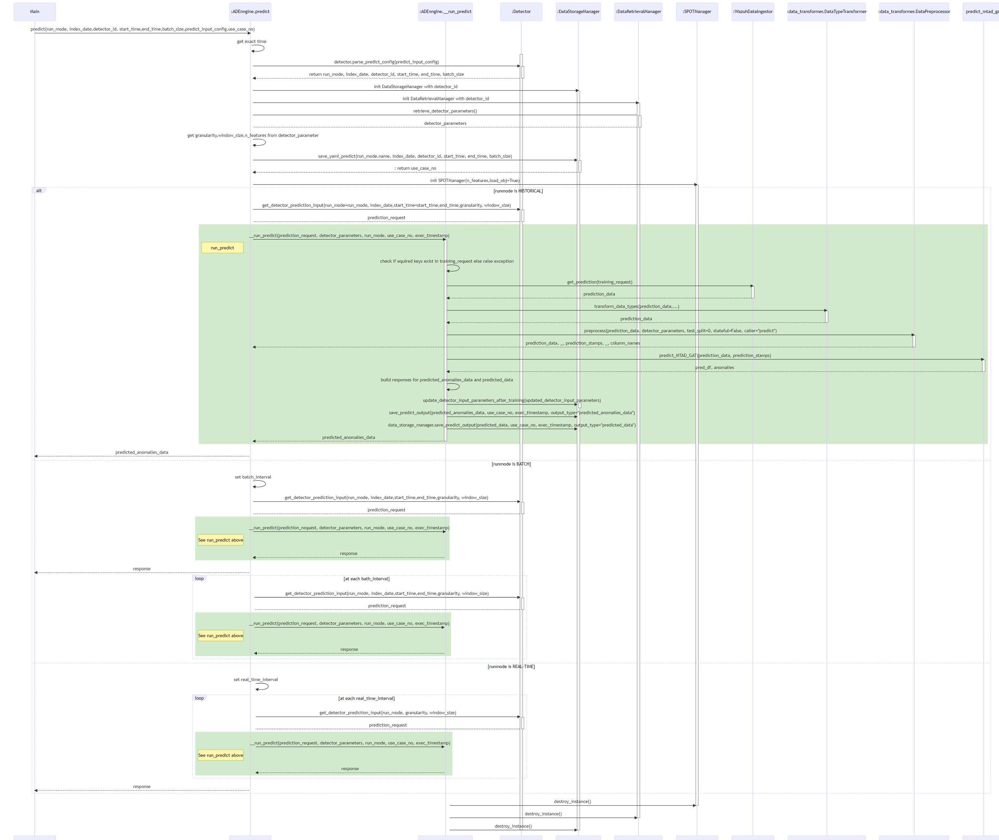
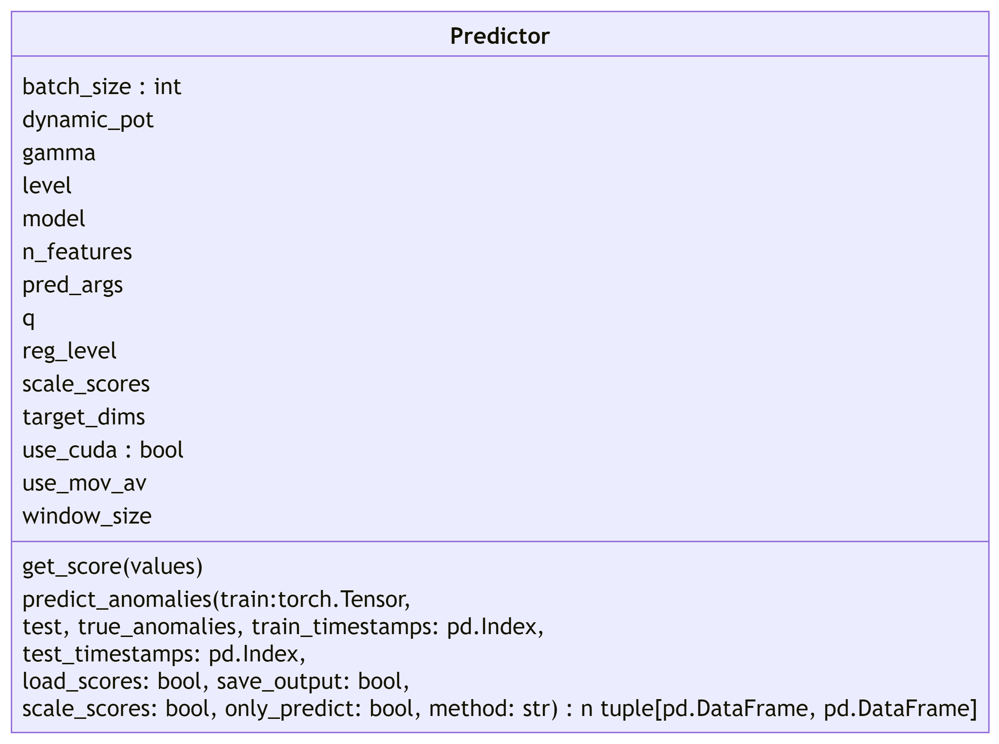
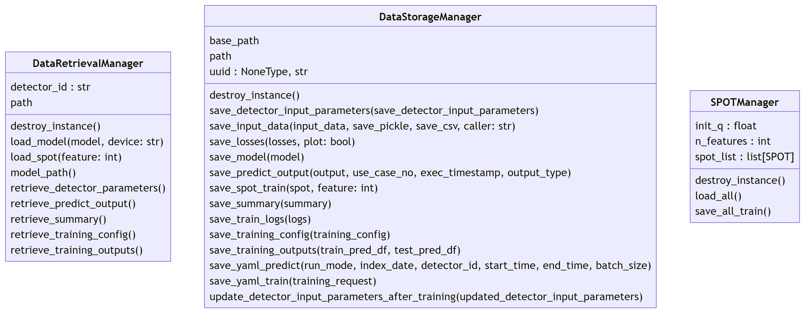

1.0 HARC-001
Diagram
The diagram below explicit the context of ADBox subsystem.

Parent links: MRS-002, MRS-004, MRS-032, MRS-033, MRS-039, MRS-041
1.1 HARC-002
Diagram
The diagram below explicit the architecture of ADBox subsystem.

Parent links: MRS-004, MRS-031, MRS-032, MRS-033, MRS-039, MRS-041
1.2 HARC-003
Diagram
The diagram below explicit ADEngine object of ADBox.
Parent links: MRS-004, MRS-032
1.3 HARC-004
Diagram
The diagram summarize the flow of the training pipeline orchestrated by the ADBox Engine.

Parent links: MRS-004, MRS-030, MRS-032
1.4 HARC-005
Diagram
The diagram summarize the flow of the predict pipeline orchestrated by the ADBox Engine.
Parent links: MRS-004, MRS-030, MRS-032
1.5 HARC-006
Diagram
The diagram explicit the sequence of operations of the training pipeline orchestrated by the ADBox Engine.

Parent links: MRS-004, MRS-030, MRS-032
1.6 HARC-007
Diagram
The diagram explicit the sequence of operations of the predicting pipeline orchestrated by the ADBox Engine.

Parent links: MRS-004, MRS-030, MRS-032
1.7 HARC-008
Diagram
The diagram explicit the sequence of operations runned by the function train_MTAD_GAT of the mtad_gat subpackage of ADBox.

Parent links: MRS-004, MRS-030
1.8 HARC-009
Diagram
The diagram explicit the sequence of operations runned by the function predict_MTAD_GAT of the mtad_gat subpackage of ADBOX.

Parent links: MRS-004, MRS-030
1.9 HARC-010
Diagram
The diagram explicit the sequence of operations runned by the function pot_eval of the mtad_gat subpackage of ADBox.
This function runs the dynamic POT evaluation.

Parent links: MRS-004, MRS-030
1.10 HARC-011
Diagram
The diagram explicit the sequence of operations runned by the function get_score method of the Predictor object of the MTAD_GAT subpackage of ADBox.
Parent links: MRS-004, MRS-030
1.11 HARC-012
Diagram
The diagram explicit the sequence of operations runned by the function predict_anomalies method of the Predictor object of the MTAD_GAT subpackage of ADBox.

Parent links: MRS-004, MRS-030
1.12 HARC-013
The diagram below explicit Predictor class object of the MTAD_GAT subpackage of ADBox.

Parent links: MRS-004, MRS-030
1.13 HARC-014
The diagram below explicit Manager classes object ADBox. These classes are singleton classes.

Parent links: MRS-004, MRS-030
1.14 HARC-015
The diagram below explicit Data Transformer class objects ADBox.

Parent links: MRS-004, MRS-028, MRS-030
1.15 HARC-016
Diagram
The diagram summarize the flow of the method Preprocessor.preprocessing by the ADBox Data Transformer.
Parent links: MRS-004, MRS-030
1.16 HARC-017
Diagram
The diagram summarize the sequence of actions of the method Preprocessor.preprocessing by the ADBox Data Transformer.

Parent links: MRS-004, MRS-030
1.17 HARC-018
Diagram
Context diagram of IDPS-ESCAPE.
Parent links: MRS-002, MRS-003, MRS-004, MRS-005, MRS-006, MRS-007, MRS-008, MRS-011, MRS-012, MRS-013, MRS-017, MRS-018, MRS-019, MRS-020, MRS-022, MRS-032, MRS-033, MRS-037, MRS-039, MRS-040, MRS-041